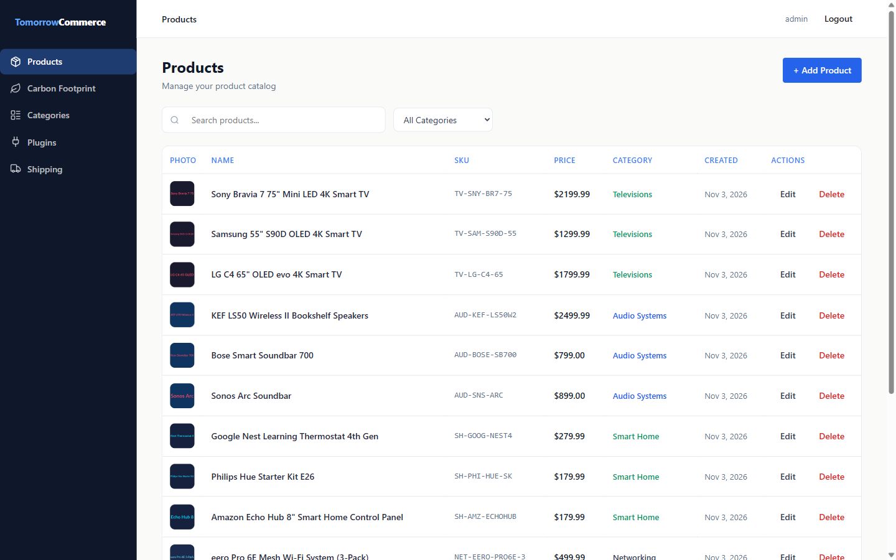
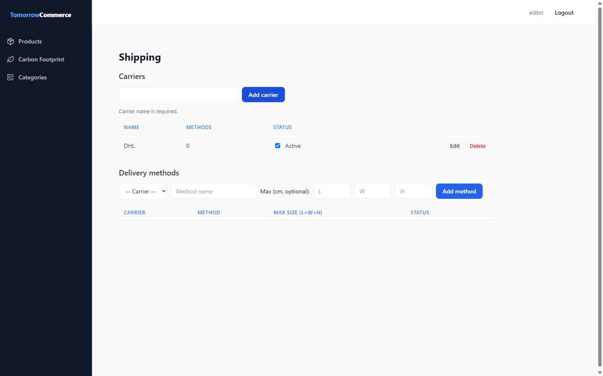
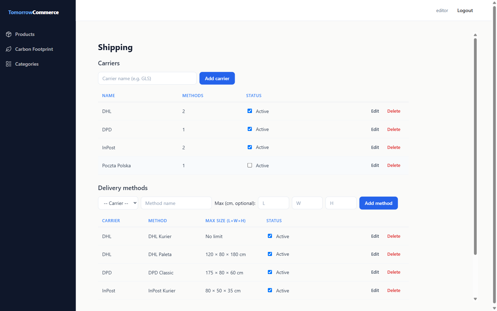
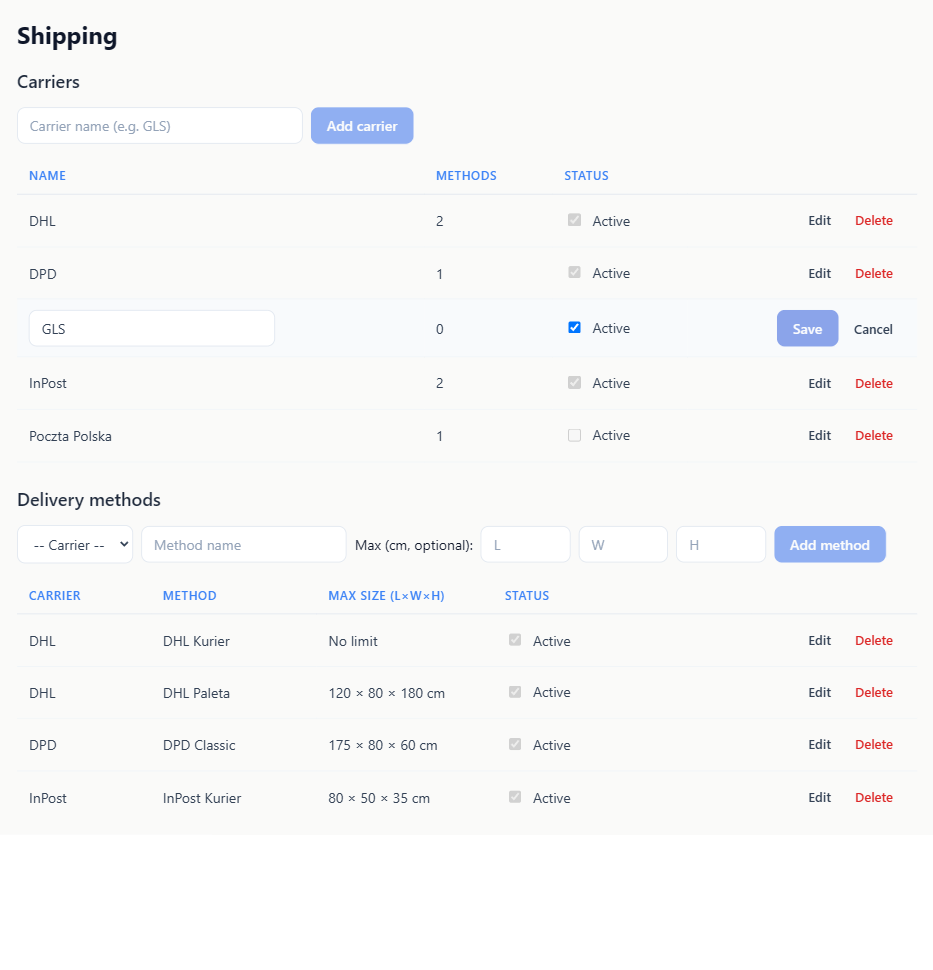
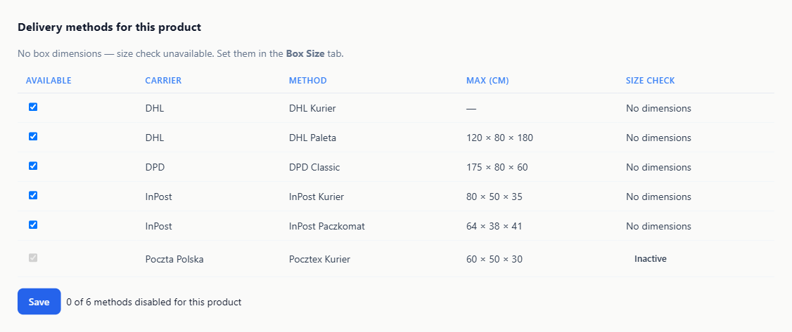
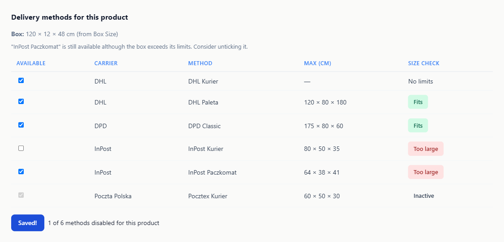
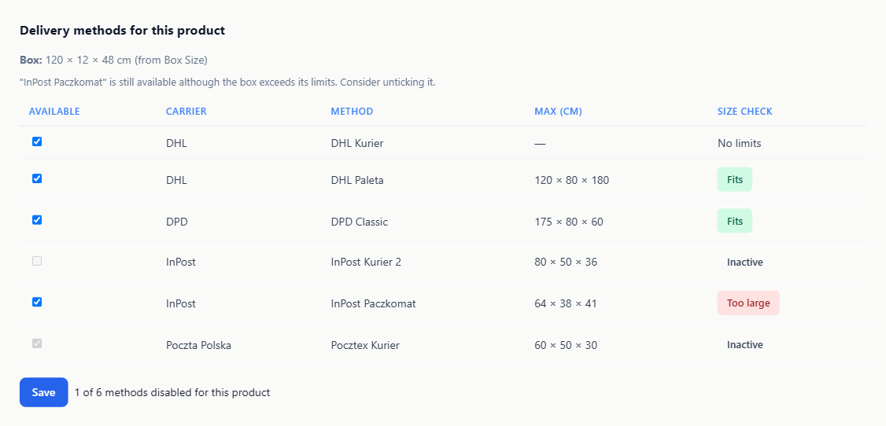
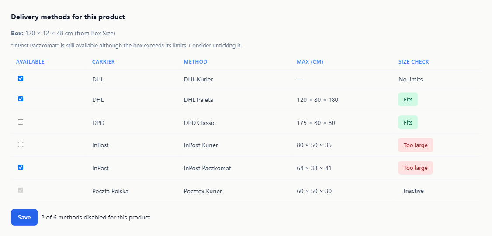
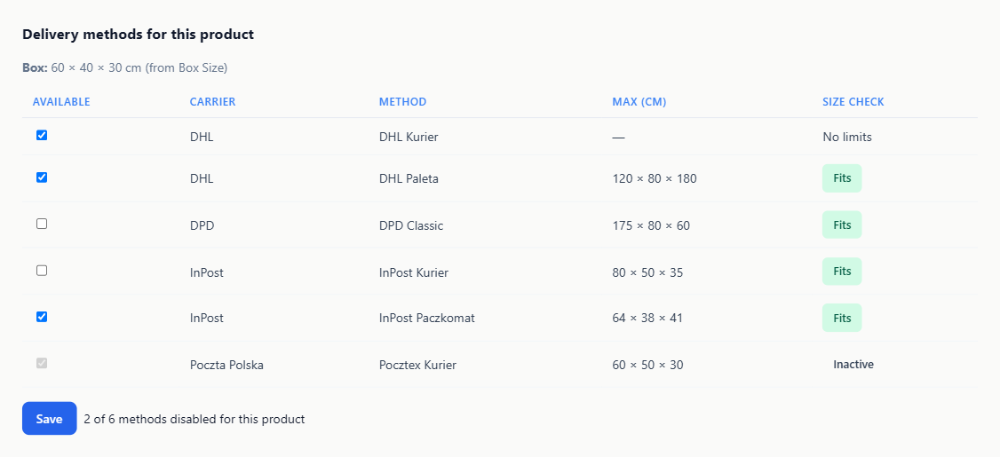

Identifier & environment
| Task | 2026-11-07-shipping-plugin |
|---|---|
| Spec | implementation/spec.md |
| Git ref | 00e2c24 (master, with uncommitted shipping-plugin working-tree changes) |
| Base URL | http://localhost:5173 (host Vite dev server, /api proxied to :8080) |
| Browser / viewport | Playwright MCP Chromium · 1440×900 |
| Auth | admin (sidebar check), editor (READ, EDIT), viewer (READ); passwords admin123 / editor123 / viewer123 valid |
| Test data | Live dev DB: 4 carriers and 6 methods created through the UI; product 1 "LG C4 65" OLED evo 4K Smart TV", box 120×12×48 (also 60×40×30 and none) |
| Plugins | shipping :3010 (started for this run), box-size :3002 (already running), backend :8080 |
The shipping plugin behaves as specified across both checklists, and every exact copy string in reqs 2, 5, 7, 14, 15, 19, 20 and 23 matched verbatim. REST confirmed that inline edits keep the same objectId with no duplicates, that disabledMethodIds hold method objectIds, and that an empty selection issues DELETE /api/plugins/shipping/products/1/data. The single Major finding is a pre-existing host gate. The Truck icon itself renders correctly.
Group 3 — Shipping configuration page (12 scenarios)
4.1 Sidebar "Shipping" + Truck icon — ⚠️ Passed with issues
- ✅ Admin: link "Shipping" →
/plugins/shipping/ - ✅ Icon
lucide-truck(not plug) - ⚠️ Editor/viewer: only Products, Carbon Footprint, Categories

4.2 Add carrier + validation — ✅ Passed
- ✅ Empty name → "Carrier name is required."
- ✅ Spaces only → same error, nothing saved
- ✅ " DPD " stored trimmed; 4 UUID objectIds; input cleared

4.3 Carrier active toggle — ✅ Passed
- ✅ Untick Poczta Polska → same objectId saved
{active:false}, no new object - ✅ Inactive carrier excluded from the method add-form select

4.4 Carrier inline edit keeps objectId — ✅ Passed
- ✅ Cleared name → "Carrier name is required."
- ✅ Rename "DHL Express" → same
80a8fc2b-…, 4 carriers, methods show new name - ✅ Rename back; REST: 4 objects, no duplicates

4.5 One edit row, Cancel, toggle during edit — ✅ Passed
- ✅ Editing a method discards the open carrier draft
- ✅ Cancel discards the method draft
- ✅ Toggling another row twice keeps the draft "DPD draft xyz"

4.6 Carrier delete blocked / allowed — ✅ Passed
- ✅
Cannot delete "DPD": it still has 1 delivery method. Delete or move it first. - ✅
Cannot delete "InPost": it still has 2 delivery methods. Delete or move them first. - ✅ "GLS" (0 methods) deleted, no prompt

4.7 Add method + validation — ⚠️ Passed with issues
- ✅ "Select a carrier." / "Method name is required." / "Limits must be positive numbers." (−5 and 0)
- ⚠️
1e999sanitised by Chrome to "" → saved with no limit, no error - ✅ 6 methods stored with carrier objectId; empty limits omitted

4.8 Method inline edit, cleared limits — ✅ Passed
- ✅ Edit row: select, name, L × W × H, Active, Save/Cancel
- ✅ Clear H → same objectId,
maxHeightCmremoved, "175 × 80 × — cm" - ✅ Restored H=60, 6 methods
4.9 Method sorting, limits, "Carrier inactive" — ✅ Passed
- ✅ DHL Kurier, DHL Paleta, DPD Classic, InPost Kurier, InPost Paczkomat, Pocztex Kurier
- ✅ "No limit" / "120 × 80 × 180 cm"
- ✅ Pocztex: own Active checkbox + "Carrier inactive" badge
4.10 Method delete — ✅ Passed
- ✅ "Test" deleted without a prompt (1 → 0)
- ✅ All 6 methods deleted for the empty state; no error
4.11 Controls disabled while busy — ✅ Passed
- ✅ Save and Cancel disabled
- ✅ "Add carrier" and Active toggles disabled

4.12 Config page as viewer — ✅ Passed
- ✅ "You have read-only access. Ask an editor to change carriers or delivery methods."
- ✅ 0 buttons, 0 inputs/selects
- ✅ Active / Inactive / Inactive (carrier) badges

Group 4 — Product Shipping tab (11 scenarios)
4.13 Tab loads, no box — ✅ Passed
- ✅ Tabs: Details, Box Size, Shipping; iframe :3010/product-shipping
- ✅ No-box line, all active rows "No dimensions" (even no-limit), Pocztex "Inactive", no hint

4.14 Box line, badges, sorting — ✅ Passed
- ✅ "Box: 120 × 12 × 48 cm (from Box Size)"
- ✅ No limits · Fits · Fits · Too large · Too large · Inactive (classes verified)
- ✅ Kurier before Paczkomat; inactive checkbox disabled

4.15 Hint plural → singular — ⚠️ Passed with issues
- ✅
"InPost Kurier", "InPost Paczkomat" are still available although the box exceeds their limits. Consider unticking them. - ✅ After untick:
"InPost Paczkomat" is still available although the box exceeds its limits. Consider unticking it., 1 of 6 - ⚠️ Hint rendered grey (CSS specificity)

4.16 Save, "Saved!", persistence — ✅ Passed
- ✅ "Saved!" at +0.5 s, "Save" at +2.7 s
- ✅ GET data →
{"disabledMethodIds":["933de468-…"]} - ✅ After reload: Kurier unticked, 1 of 6

4.17 Re-tick all → data removed — ✅ Passed
- ✅ Network:
DELETE /api/plugins/shipping/products/1/data - ✅ pluginData has only
box-size; data endpoint{}
4.18 Disabled method edit / deactivate / reactivate — ✅ Passed
- ✅ Rename + H 36 + deactivate → same objectId
- ✅ Tab: "Inactive", unticked, disabled, 1 of 6; Save keeps the id
- ✅ Reactivate: unticked again, "Too large"

4.19 No box after Remove — ✅ Passed
- ✅ Before the click: old box line (refresh pending)
- ✅ After the click: no-box line, all "No dimensions", no hint, 1 of 6

4.20 Reload on focus keeps unsaved ticks — ⚠️ Passed with issues
- ⚠️ Host tab switch: no refresh (still 120 × 12 × 48 after 2.5 s)
- ✅ Click inside: "Box: 60 × 40 × 30 cm", badges recomputed, hint gone
- ✅ Unsaved DPD Classic untick survived (2 of 6); no "Loading..."


4.21 Product tab as viewer — ✅ Passed
- ✅ "Read-only: you can see which methods are available but not change them."
- ✅ 6/6 checkboxes disabled; hint shown; no Save or counter

4.22 Empty state (editor + viewer) — ✅ Passed
- ✅ Box line + "No delivery methods configured. Add them in the Shipping section."
- ✅ No table or Save; the viewer sees no notice

4.23 Served from :3010, strictPort — ✅ Passed
- ✅ iframe src
http://localhost:3010/… - ✅ Second vite: "Port 3010 is already in use"
- ✅ Manifest: Shipping 1.0.0, truck/110, /product-shipping/80
Discrepancies
Major#1 Sidebar "Shipping" entry hidden from editors and viewers (pre-existing host)
- Spec requirement
- Success Criteria: "the sidebar shows 'Shipping' with the Truck icon"; Key Decisions: admin means
PERMISSION_EDIT - Expected
- Editor (READ, EDIT) sees "Shipping" in the sidebar
- Actual
- Only admin (PLUGIN_MANAGEMENT) sees it:
Sidebar.tsxrenders{hasPluginManagement && <PluginMenuItems />}(committed in ba41674). The page works for editors via a direct URL. - Evidence
- 01-sidebar-shipping-truck-admin.png, 03-config-editor.png
- Root cause
- The host treats every plugin menu item as an admin feature
- User impact
- Editors cannot discover the configuration page without a link
- Recommended fix
- Host follow-up: show
menu.mainitems to all authenticated users, or gate them per manifest - Workaround
- Open
/plugins/shipping/directly or bookmark it


Minor#1 Out-of-range number input silently saved as "no limit"
- Spec requirement
- req 7: each filled limit must be a finite number > 0
- Expected
- "Limits must be positive numbers." for
1e999 - Actual
- Chrome sanitises the
type="number"value to "", so the method was saved withoutmaxLengthCmand with no message - Evidence
- Stored
{"name":"Test","active":true,"carrierId":"80a8fc2b-…"}(observed via objects.list, then deleted) - Root cause
parseLimitsreads the already-emptiedvalue;validity.badInputis ignored- User impact
- A mistyped limit silently becomes unlimited
- Recommended fix
- Check
validity.badInput, or usetype="text" inputMode="decimal" - Workaround
- Check the Max size column after saving; edit inline
Minor#2 tc-error paragraphs render grey, not red (pre-existing CSS)
- Spec requirement
- reqs 19, 24: hint and errors shown in
tc-error - Expected
- Red (#DC2626)
- Actual
.tc-plugin p(0,1,1) outranks.tc-error(0,1,0); all<p class="tc-error">are grey, the same in the mockups and in warehouse/box-size- Evidence
- 12-product-tab-editor-singular.png, 02-carrier-name-required.png
- Root cause
- Specificity bug in host
plugin-ui.css(out of scope) - User impact
- Warnings are less noticeable
- Recommended fix
- Host follow-up:
.tc-plugin .tc-error - Workaround
- None needed

Minor#3 Reload on focus does not fire on host tab switch (documented risk)
- Spec requirement
- req 28; Open Questions predicted that the refresh runs on the first click
- Expected
- Refresh on iframe
focus/visibilitychange - Actual
- Confirmed: the box line stays stale after the tab switch until the first click inside, then refreshes correctly with unsaved ticks kept
- Evidence
- 15-reload-focus-after-switch.png, 16-reload-focus-after-click.png
- Root cause
- The host hides tab iframes with CSS
display, and no events reach the iframe - User impact
- Badges and the hint can be stale until interaction; Save is unaffected
- Recommended fix
- Accepted per spec; optional host postMessage on tab activation
- Workaround
- Click inside the Shipping tab


Critical: none observed · Cosmetic: none observed
Console & network
| Source | Message | Frequency | Severity | Impact |
|---|---|---|---|---|
| react-dom_client.js:6804 (host) | An iframe which has both allow-scripts and allow-same-origin for its sandbox attribute can escape its sandboxing. | Once per iframe mount | Minor | Pre-existing host warning, not shipping-specific |
0 console errors. No failed (non-2xx) shipping requests; blocked carrier deletes are resolved client-side.
Spec alignment
- Fully implemented: reqs 1–6, 8–25, 28 (with the accepted trigger caveat); sorting rule; objectId as domain id; opt-out with removeData; badge precedence; inactive opt-out preservation; viewer variants; strictPort 3010; manifest;
truckicon. - Partially implemented: req 7: browser-sanitised invalid limits bypass validation.
- Not implemented: none.
- Extra: the blocked-delete error stays visible after opening an edit row (cleared on the next carrier mutation); harmless and matches the mockup.
Variances from plan
- box-size was not registered, so it was registered from its manifest (PUT 200).
PluginProviderfetched plugins before login, and a reload was needed (host behaviour).- The first Playwright clicks in the iframe did nothing while shipping's Vite re-optimised dependencies; later clicks were consistent (environment artefact, no data affected).
- Roles were switched via an in-page login fetch, not the form.
- Pocztex Kurier was added by briefly reactivating Poczta Polska; DHL Paleta was briefly inactive for viewer coverage.
- Screenshots 05 and 06 are clipped at the iframe viewport height.
- The 14 and 12 walkthrough items live in group reports that are not in the task dir; scenarios were derived from reqs 1–28, the Success Criteria and the brief.
Exit criteria
| Criterion | Status | Evidence |
|---|---|---|
| Vite serves on :3010; a second instance fails (strictPort) | ✅ | 4.23 |
| Sidebar "Shipping" with Truck; product "Shipping" tab | ⚠️ | Admin only (Major #1); tab ✅ 4.13 |
| Add, edit inline (same objectId, no duplicate), toggle, delete | ✅ | 4.2–4.4, 4.7–4.10 |
| One edit row at a time | ✅ | 4.5 |
| Blocked delete singular/plural | ✅ | 4.6 |
| InPost too large, Kurier before Paczkomat, plural hint exact | ✅ | 4.14, 4.15 |
| Untick one → singular hint | ✅ | 4.15 |
| Untick + Save + reload persists; objectIds; "Saved!" 2 s | ✅ | 4.16 |
| Re-tick all + Save removes data | ✅ | 4.17 |
| Rename/limits edit keeps disabled | ✅ | 4.18 |
| Deactivate keeps the opt-out; reactivate re-applies | ✅ | 4.18 |
| Box Size change + focus updates; unsaved ticks kept | ✅ | 4.20 |
| Viewer: no write controls, disabled checkboxes, notices | ✅ | 4.12, 4.21, 4.22 |
| 8 screens + 2 components match mockups (rules win) | ✅ | 9 match / 1 minor / 0 drift |
Recommendations
- Must fix before merge: none.
- Should fix soon: Major #1 (host sidebar gating, separate task); Minor #1 (
validity.badInputon limit inputs). - Nice-to-have: Minor #2 (plugin-ui.css specificity); Minor #3 (host tab-activation message).
Artifacts
- Screenshots:
verification/screenshots/(30 files: 22 captures + 8 rendered mockups) - Visual fidelity: visual-fidelity.html · md ↗
Conclusion
⚠️ GO WITH CAVEATS. Every specified shipping-plugin behaviour was observed working end to end against the live backend, with exact copy, correct objectId handling and correct pluginData persistence. The Major finding is a pre-existing host sidebar gate. The Minor findings are a browser input edge case, pre-existing CSS, and a documented trigger limitation. Recommendation: merge, with follow-ups for sidebar gating and limit-input badInput handling.